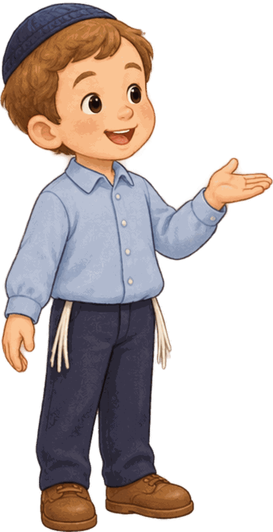

<!doctype html>
<html lang="en">
<head>
<meta charset="utf-8">
<meta name="viewport" content="width=device-width, initial-scale=1, viewport-fit=cover">
<title>Find the Mistake — Kindergarten Numbers</title>
<!-- Kindergarten Numbers, Unit 10 "Making 10" (MAP.md "Find the mistake"), at the bakery counter. Mendy is learning too.
     Mendy says two numbers make ten, and puts that many pink and blue cupcakes in the tin. The tin shows the truth. Three things can happen:
     too few (an empty cup: he taps it to fill it), too many (one is left on the plate: he taps the plate to take it away), or Mendy is right (thumbs up).
     The blue number in the panel changes as he fixes it. A slip (thumbs up when Mendy is wrong): we count the empty cups or the left-over cupcakes. -->
<script type="importmap">{ "imports": { "three": "./lib/three.module.min.js" } }</script>
<link rel="stylesheet" href="frame.css"><link rel="stylesheet" href="unit6.css"><link rel="stylesheet" href="unit10.css"><link rel="stylesheet" href="hands-side.css">
<style>@media (max-width:760px), (max-aspect-ratio:4/5){ .sum{ width:auto; } }</style>
</head>
<body>
<div id="world"></div>
<div id="game" class="locked"><div class="stage s6" id="stage">
  <div class="ui" id="panel">
    <div class="sum" id="sum"></div>
    <button id="ok" class="bigbtn btn3d b-green" aria-label="Mendy is right"><svg viewBox="0 0 48 48"><path d="M14 22h-5v17h5zM14 38c6 2 14 2 20 1 3-.5 5-3 5-6l1-8c.4-3-2-5-5-5h-8l1-6c.4-3-1-6-4-6l-6 12z" fill="#fff" stroke="#fff" stroke-width="2" stroke-linejoin="round"/></svg></button>
  </div>
</div></div>
<script src="kit.js"></script><script src="frame.js"></script><script src="unit5.js"></script>
<script type="module">
import { mount } from './bakery10.js';
const $ = id => document.getElementById(id);
let K, R, done;
const band = () => [innerWidth < 760 ? 80 : 92, $('panel').getBoundingClientRect().top - 8];
function sum() { $('sum').innerHTML = '<span class="p pink">' + U5.num(R.a, '#FF5C9A') + '</span><span class="op">+</span><span class="p blue">' + U5.num(R.b, '#2F8FEF') + '</span><span class="op">=</span><span class="p ten">' + U5.num(10) + '</span>'; }
function hooks() {
  const t = R.a + R.b;
  if (t === 10) { GAME.right = () => [{ tap: '#ok' }]; GAME.wrong = null; return; }
  GAME.right = () => [{ tap: t < 10 ? '.tspot[data-id="cup' + K.firstEmpty() + '"]' : '.tspot[data-id="plate"]' }]; GAME.wrong = () => [{ tap: '#ok' }];
}
function open() { GAME.phase = 'answer'; FR.lock(false); hooks(); }
async function fixed(el) { K.celebrate(); await FR.yes(el, 'Fixed! ' + FR.Word(R.a) + ' and ' + FR.word(R.b) + ' make ten.'); finish(); }
function finish() { const d = done; done = null; d(R.misses === 0); }
async function tap(id, el) {
  if (GAME.phase !== 'answer') return;
  if (id.startsWith('cup') && R.a + R.b < 10) { GAME.phase = 'busy'; await K.add(+id.slice(3)); R.b++; sum(); if (R.a + R.b === 10) return fixed(el); open(); return; }
  if (id === 'plate' && R.a + R.b > 10) { GAME.phase = 'busy'; await K.dropExtra(); R.b--; sum(); if (R.a + R.b === 10) return fixed(el); open(); return; }
}
async function ok() {
  NK.unlock(); if (GAME.phase !== 'answer') return; GAME.phase = 'busy'; FR.lock(true); const t = R.a + R.b;
  if (t === 10) { K.celebrate(); await FR.yes($('ok'), 'Yes! Mendy is right. The tin is full.'); return finish(); }
  FR.oops($('ok')); R.misses++;
  if (t < 10) { await FR.say("Let's look. Count the empty cups."); const e = await K.countEmpty(j => FR.say(FR.Word(j + 1) + ',', { noRepeat: true })); K.unglow();
    await FR.say(FR.Word(e) + (e === 1 ? ' cup is' : ' cups are') + ' empty. Fill it!'); }
  else { await FR.say("Let's look. The tin is full, and look!"); const ex = K.extras(); await K.bumpAll(ex, i => FR.say(FR.Word(i + 1) + ' left over' + (i === ex.length - 1 ? '.' : ','), { noRepeat: true }));
    await FR.say('Tap the plate. Take it away.'); }
  open();
}
const PLAN = [[6, 3], [7, 3], [8, 3], [5, 3], [4, 6], [9, 2]];   /* too few (by one), right, too many, too few (by two), right, too many */
function play(F, i) {
  return new Promise(async res => {
    const [a, b] = PLAN[i]; R = { a, b, misses: 0 }; done = res; GAME.phase = 'busy'; F.lock(true); sum();
    K.setTin(Math.min(10, a + b), { blueFrom: a }); K.setExtra(Math.max(0, a + b - 10));
    await F.say('Mendy says: ' + F.word(a) + ' and ' + F.word(b) + ' make ten!'); K.spots(true); open();
    await F.say(i === 0 ? 'Look at the tin. Fix it, or thumbs up.' : 'Is Mendy right? Look at the tin.', { repeat: 'Fill an empty cup, take one away, or thumbs up.' });
  });
}
FR.game({
  id: 'u10-mistake', title: 'Find the Mistake', rounds: 6,
  hero: '<div class="hero6"></div>',
  init() { K = mount($('world'), { kids: ['mendy', 'dovid'], band }); K.onTap = (id, el) => tap(id, el); $('ok').addEventListener('click', ok); },
  demo: async F => {
    R = { a: 7, b: 2 }; sum(); K.setTin(9, { blueFrom: 7 }); K.setExtra(0);
    await F.say('Mendy says seven and two make ten. Watch me check.'); await F.say('One cup is empty! Mendy needs one more.'); K.spots(true);
    await F.handTo(document.querySelector('.tspot[data-id="cup9"]')); await F.handTap(); await K.add(9); R.b = 3; sum(); K.celebrate(); F.handHide();
    await F.say('Seven and three make ten!');
    R = { a: 8, b: 3 }; sum(); K.setTin(10, { blueFrom: 8 }); K.setExtra(1); await F.say('Eight and three? One is left over.');
    await F.handTo(document.querySelector('.tspot[data-id="plate"]')); await F.handTap(); await K.dropExtra(); R.b = 2; sum(); await F.say('Take it away. Eight and two!');
    R = { a: 6, b: 4 }; sum(); K.setTin(10, { blueFrom: 6 }); await F.say('Six and four? The tin is full.'); await F.handTo($('ok')); await F.handTap(); F.handHide(); await F.say('Thumbs up! Mendy is right.');
  },
  round: (F, i) => play(F, i),
  endSay: s => s >= 2 ? 'Mendy says thank you! You fixed every one.' : 'Good checking! Let\'s play once more.'
});
</script>
</body>
</html>
